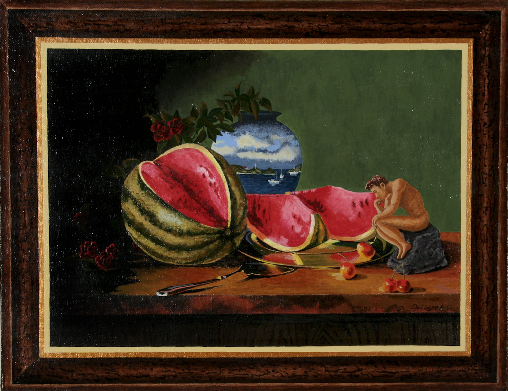

Prison Creative Arts Project
University of Michigan, College of Literature, Science, and the Arts
Curatorial Team

Richard Dolinsek, Think Bout Watermelon, Acrylic, 14"x18", 2014.
Founded in 1990 with a single theatre workshop, the Prison Creative Arts Project (PCAP) has grown to include undergraduate courses, exhibitions, publications, a prison reentry arts program, and events that reach thousands of individuals each year. PCAP keeps incarcerated participants apprised of programs, events, and opportunities through our newsletter, which is sent to over 1,800 recipients three times a year.
More information here and at the Prison Creative Arts Project Visual Art Database.